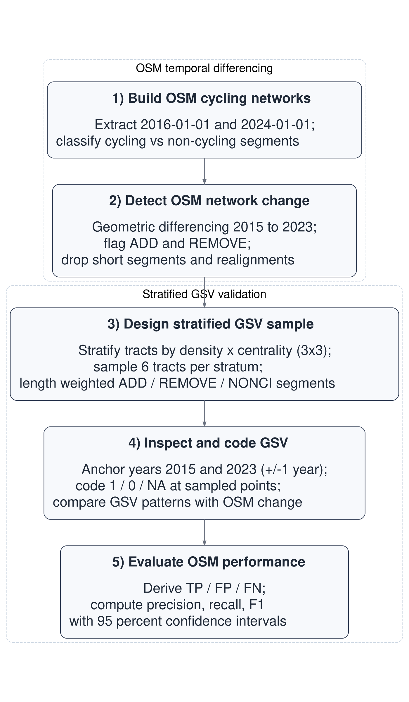
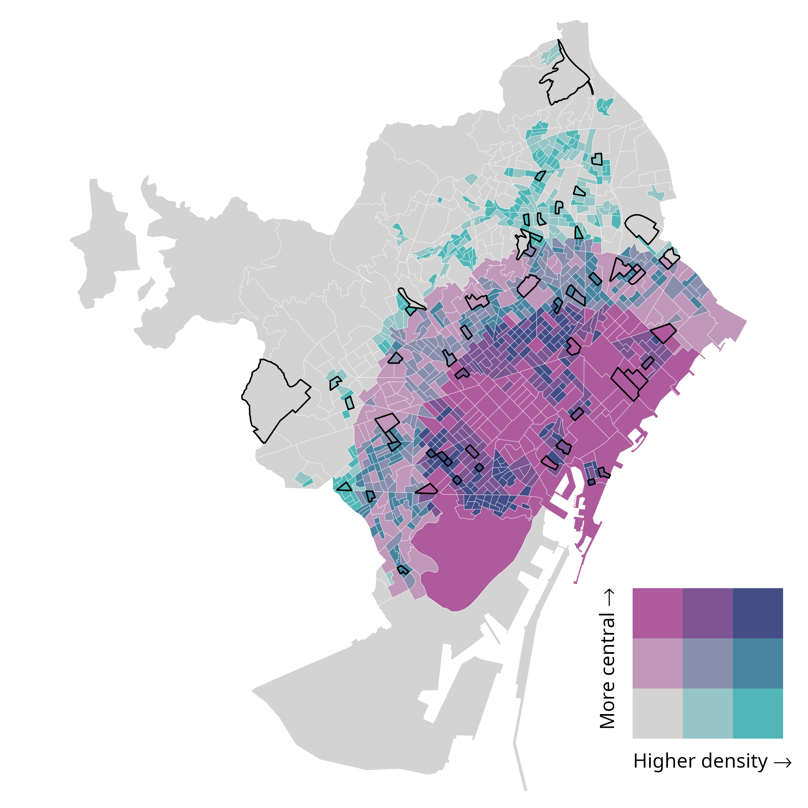
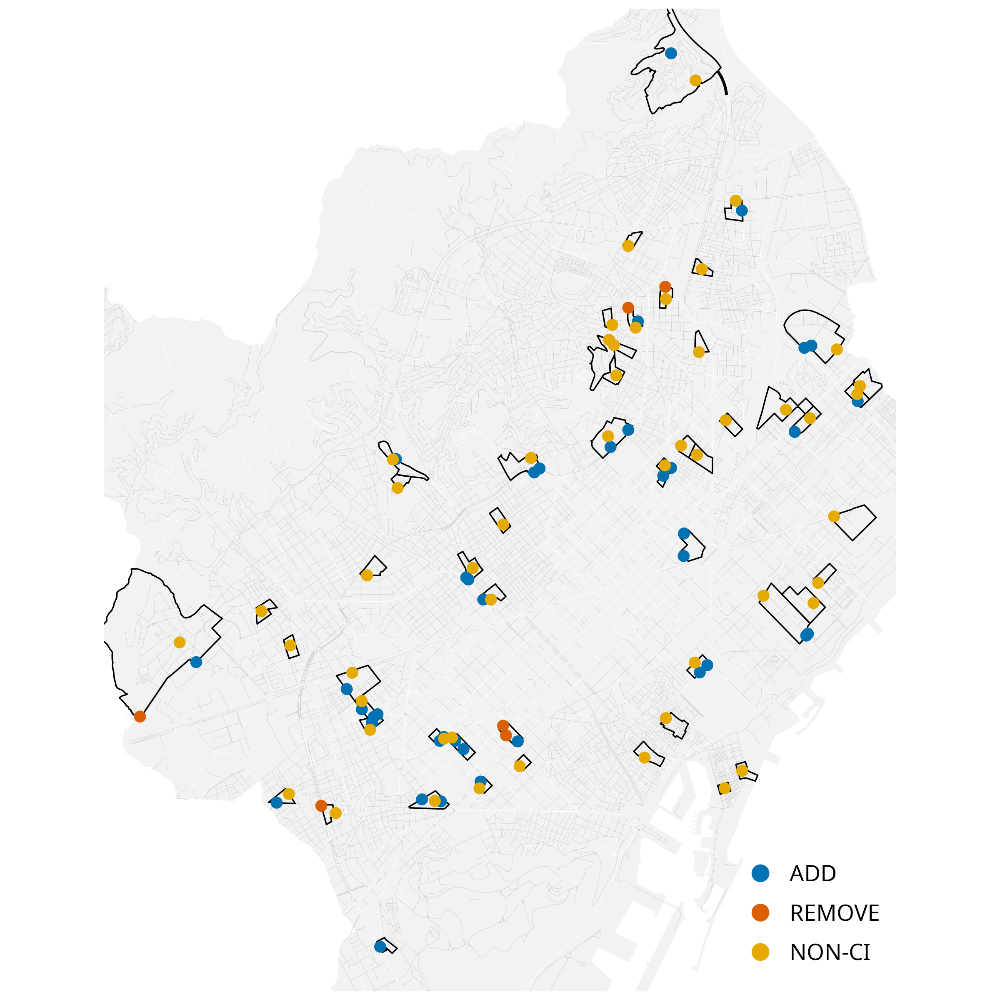
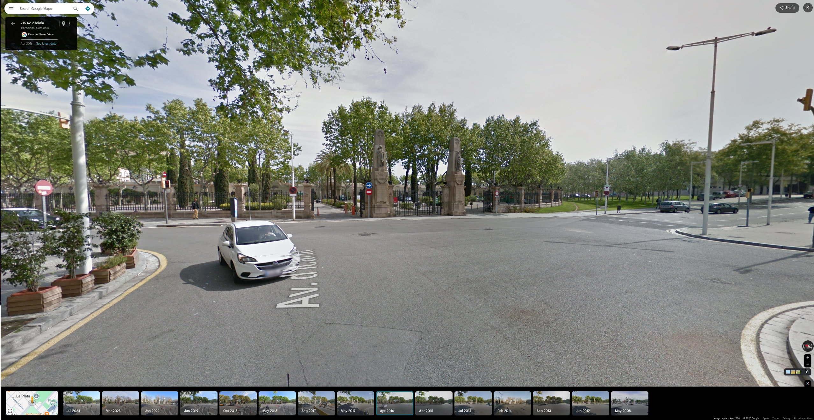
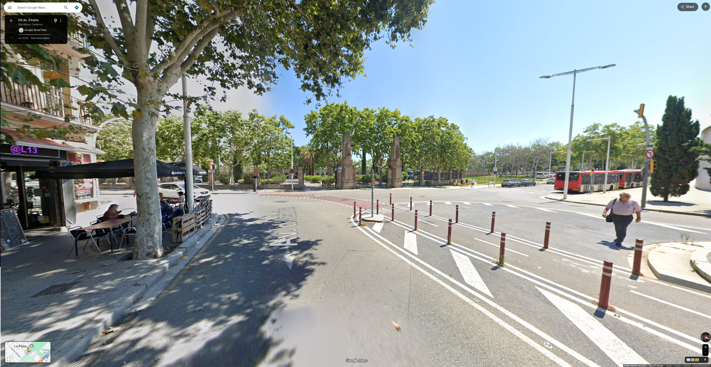
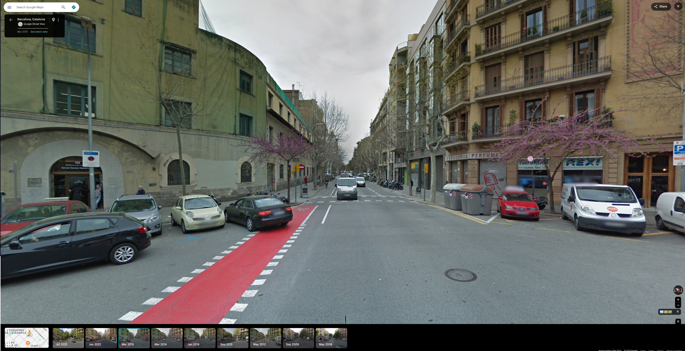
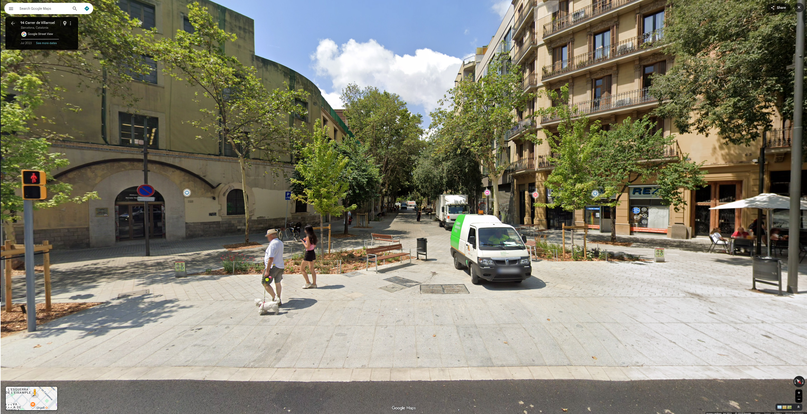
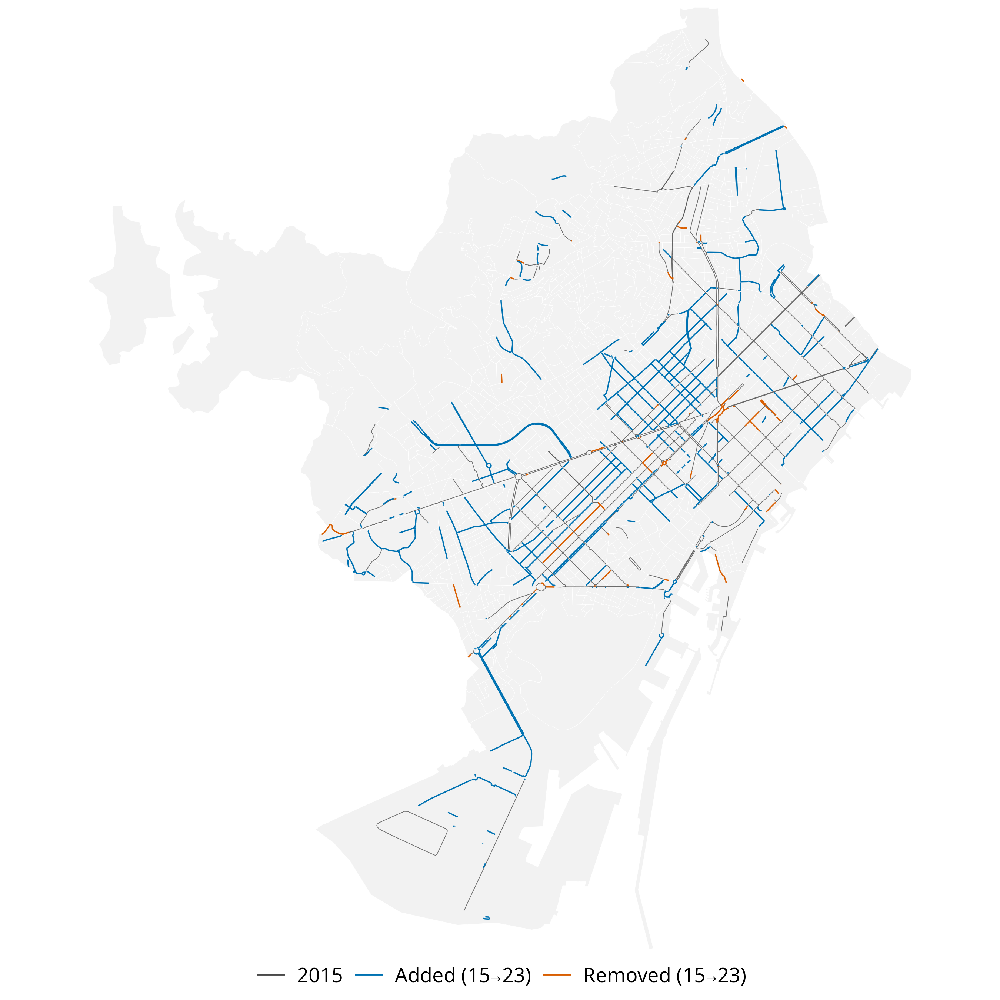

Validating OpenStreetMap for detecting cycling-infrastructure change: A Barcelona pilot using Google Street View (2015–2023)
Abstract
Cities are expanding their cycling networks rapidly, yet longitudinal data describing how these networks change remain limited. Volunteered Geographic Information, particularly OpenStreetMap (OSM), offers time-stamped spatial data on urban infrastructure, but its temporal reliability for detecting cycling-infrastructure change is uncertain. This study evaluates how well OSM identifies additions and removals of cycling infrastructure in Barcelona between 2015 and 2023, using Google Street View (GSV) as ground truth.
Baseline and follow-up cycling networks were derived from dated OSM snapshots representing 2016 and 2024, and geometric differencing was used to detect apparent additions and removals. Barcelona’s 1,063 census tracts were stratified by population density and centrality into nine groups, from which six tracts per stratum were selected (54 in total). Within these tracts, candidate additions, removals and non-cycling controls were sampled, yielding 105 locations, of which 96 had usable GSV imagery. Two trained coders independently classified each site to identify true additions and removals, false positives and false negatives.
OSM indicates an 88% increase in cycling-infrastructure length, with most additions located in denser and more central areas. Validation shows that OSM captures all observed additions and removals in our sample (recall = 1.00) but includes several false positives, especially for removals. Precision is about 0.73 for additions and 0.29 for removals, producing an overall precision of 0.67 and an F1 score of 0.80. The study presents a reproducible workflow for assessing temporal OSM data and supports broader efforts to evaluate the validity of volunteered geographic information for urban and transport research.
Keywords
OpenStreetMap (OSM), Cycling infrastructure, Active travel, Built environment change, Data validation, Reproducible workflows, Barcelona
Introduction
In recent years, many cities worldwide have expanded their cycling networks in pursuit of cleaner, healthier and more equitable mobility (Szell et al. 2022; Buehler and Pucher 2021). Reliable data on how these networks evolve are essential to guide fair and evidence-based planning and to enable robust longitudinal research on their impacts. Yet longitudinal information is often missing: official inventories are rarely maintained consistently, while local field audits, though accurate, are costly and difficult to reproduce at scale. As a result, even in cities with substantial cycling expansion, consistent and longitudinally comparable data on infrastructure change are often limited and fragmented.
The growing availability of Volunteered Geographic Information (VGI) (Goodchild 2007) offers new opportunities to address these data gaps. Among such sources, OpenStreetMap (OSM) stands out for providing open, editable and time-stamped spatial data on a wide range of urban features. In principle, OSM could enable the reconstruction of past infrastructure networks and support empirical studies of built-environment transformations.
However, the use of OSM for longitudinal analysis faces several challenges. Previous research has shown that not all edits correspond to physical change (false positives), some genuine changes may remain unmapped (false negatives), and even valid updates are not always recorded at the time they occur (Barron, Neis, and Zipf 2014; Ferster et al. 2020; Vierø, Vybornova, and Szell 2025). These uncertainties raise questions about whether OSM’s temporal record can be trusted to detect infrastructure additions and removals.
(Winters, Ferster, and Laberee 2025) (Schmidl, Navratil, and Giannopoulos 2021) (Bres et al. 2023) (Hochmair, Zielstra, and Neis 2015)
This study addresses these questions by evaluating the reliability of OSM for detecting cycling-infrastructure change in Barcelona between 2015 and 2023, using Google Street View (GSV) imagery as ground truth. It assesses OSM’s ability to identify added and removed cycle lanes and introduces a simple calibration framework to adjust OSM-based estimates to real-world conditions. The work forms part of the ATRAPA project (The Active Travel Backlash Paradox), which studies how people perceive and respond to built-environment sustainable-travel interventions across European cities (GEMOTT Research Group 2025).
Data and methods
The analysis followed a five-step reproducible workflow (Figure 1) with two main components: temporal differencing of dated OSM extracts to detect additions and removals of cycling infrastructure, and stratified GSV validation to check a sample of these detected changes. All stages were implemented in R using open-source packages, including osmextract (Gilardi et al. 2025) to retrieve dated OSM snapshots.
OSM temporal differencing
We constructed baseline and follow-up cycling networks from OSM extracts dated 1 January 2016 and 1 January 2024, approximating conditions in 2015 and 2023. From each extract, we derived a CORE cycling-infrastructure (CI) network intended to represent bicycle-specific, physically visible infrastructure while minimising double counting arising from alternative OSM representations.
A segment was classified as CI (CORE RAW) if it met either of the following conditions:
highway = cycleway; or
any cycleway* tag (including cycleway, cycleway:left, cycleway:right, cycleway:both, and other cycleway:* keys where present) had a value in {lane, track, opposite_lane, opposite_track}.
Values were matched case-insensitively and, where multiple values were present, a segment was retained if any value matched the set above. We excluded cycleway=separate because it indicates the presence of a cycling facility located elsewhere rather than cycling infrastructure represented by the road segment geometry.
To reduce double counting, we applied a no-double-counting (NDC) procedure. After classifying CORE RAW segments as either cycleway (from highway=cycleway) or onroad_lanes (from cycleway* tags), we removed any onroad_lanes segment whose geometry lay within DEDUPe_TOL_M metres of a cycleway geometry. The resulting CORE NDC network was used for all subsequent length calculations, differencing, and validation.
A segment was classified as NONCI if it did not meet any of the CI criteria above and its highway tag was in {primary, secondary, tertiary, unclassified, residential, primary_link, secondary_link, tertiary_link, living_street, pedestrian}.
After cleaning and projecting the networks, the 2015 and 2023 layers were compared geometrically. Segments present only in 2023 were classified as additions and those present only in 2015 were classified as removals. Cases where an apparent addition lay immediately adjacent to a corresponding removal were excluded, since these typically reflected minor positional realignments in OSM rather than actual physical change.
Stratified GSV validation
To evaluate the accuracy of OSM-detected cycling-infrastructure changes, we implemented a stratified GSV validation across Barcelona’s 1,063 census tracts (2015; Figure 2 a). Population density was calculated as the 2022 resident population per square kilometre for each tract, using official census counts and tract area. Centrality was expressed as straight-line distance from the tract centroid to Plaça Catalunya, treated as the city centre. Both variables were divided into terciles, ranked from 1 (lowest density / most peripheral) to 3 (highest density / most central). Combining density and centrality terciles yielded nine density–centrality strata labelled D1_C1 to D3_C3, where Di indicates density tercile i and Cj centrality tercile j. From each stratum, six tracts were randomly selected (54 in total).
Within each sampled tract, we drew up to two OSM-detected additions, two removals and one non-cycling control, with selection probabilities proportional to segment length (Figure 2 b). The midpoint of each selected segment served as the validation location and was linked to the nearest available GSV panorama. An interactive version of the validation-points map, including clickable links to the corresponding GSV panoramas for every sampled location, is provided in Supplement S1.


Each point was independently coded by two trained coders following a standardised protocol. Coders examined the GSV panoramas for two periods corresponding to the OSM reference dates: a follow-up around 1 January 2024 and a baseline around 1 January 2016. Because GSV does not provide panoramas for the exact OSM reference dates, we used the closest available imagery surrounding each period. To avoid coder judgement about temporal proximity, coders inspected a predefined set of allowable years—2024 and 2023 for the follow-up and 2016 and 2015 for the baseline. For each of these years, they recorded whether cycling infrastructure was present (1/0/blank) and the month number displayed in GSV.
The year hierarchy was fixed: coders attempted the main years first, and if neither was interpretable, they reviewed a fallback year (2022 for follow-up, 2014 for baseline). If none of the allowed years yielded a usable view, the period was coded as missing.
Following coding, the spreadsheet automatically selected, for each period, the GSV month closest to the relevant OSM reference date. These closest-in-time observations formed the adjudicated baseline and follow-up values used to classify OSM-detected additions, removals and non-cycling controls.
Intercoder agreement was high (XXX %), with XXX of XXX cases requiring reconciliation.
Using these adjudicated values, each OSM-detected event was categorised as an addition (ADD), removal (REMOVE) or non-cycling control (NONCI):
ADD (OSM reports addition)
True Positive (TP): verifiable 0→1 transition
False Positive (FP): any other interpretable pattern
NA: if either period lacked a usable view
REMOVE (OSM reports removal)
TP: verifiable 1→0 transition
FP: otherwise
NA: if either period lacked a usable view
NONCI (OSM reports no change)
- Used to identify False Negatives (FN): genuine 0→1 or 1→0 transitions visible in GSV but not detected in OSM.
Examples of TP additions and removals are shown in Figure 3. Full protocol details and the coding workbooks are provided in Supplement S2 and Supplement S3. The joined results are available in Supplement S4.




Validation accuracy was then assessed using standard metrics. Precision (TP/(TP+FP)) captures the share of OSM-detected changes that were real. Recall (TP/(TP+FN)) captures the share of real changes correctly detected by OSM. The F1 score is the harmonic mean of precision and recall. Ninety-five per cent Wilson confidence intervals (CI) were computed for each measure.
Precision = TP / (TP + FP)
Percentage of OSM changes that were correct. (How many OSM-detected changes are real).Recall = TP / (TP + FN)
Percentage of real changes detected by OSM. (How many real changes OSM detected).F1 = 2 · Precision · Recall / (Precision + Recall)
Balanced indicator combining both metrics.
Results
Network change detected from OSM (2015–2023)
Between 2015 and 2023, the OSM-derived cycling network in Barcelona increased from 153.6 to 288.4 km, representing an 88 % expansion (Figure 4). Geometric differencing indicated 155.7 km of added and 24.6 km of removed infrastructure, corresponding to a net gain of about 131 km. The small gap between this estimate and the change in totals (–3.7 km) suggests good internal consistency (Table 1).
| Metric | Value (km) |
|---|---|
| Total 2015 | 130.7 |
| Total 2023 | 235.7 |
| Net growth | 105.0 |
| Added | 127.1 |
| Removed | 24.9 |
| Added − Removed | 102.2 |
| Gap: (Added − Removed) − Net | -2.8 |
OSM-detected additions were not evenly distributed across the city. Low-density strata (D1_C1, D1_C2 and D1_C3) accounted for around 60 % of all additions, with particularly large gains in low-density areas closer to the centre (D1_C2 and D1_C3). In contrast, OSM indicated only a small number of removals, concentrated mainly in intermediate-density tracts such as D2_C1, D2_C3 and D3_C3 (Table 2). These patterns reflect Barcelona’s recent focus on expanding cycling provision in dense, transit-rich areas close to the core while redesigning only selected streets elsewhere.
| Stratum | Definition | Added (km) | Removed (km) | Added (%) | Removed (%) |
|---|---|---|---|---|---|
| D1_C1 | Low density, peripheral | 31.0 | 7.1 | 24.5 | 28.8 |
| D1_C2 | Low density, intermediate | 16.0 | 1.0 | 12.6 | 4.0 |
| D1_C3 | Low density, central | 29.1 | 9.4 | 22.9 | 37.7 |
| D2_C1 | Medium density, peripheral | 2.0 | 0.5 | 1.6 | 1.9 |
| D2_C2 | Medium density, intermediate | 10.9 | 1.4 | 8.6 | 5.8 |
| D2_C3 | Medium density, central | 15.1 | 2.8 | 11.9 | 11.1 |
| D3_C1 | High density, peripheral | 1.4 | 0.1 | 1.1 | 0.3 |
| D3_C2 | High density, intermediate | 9.7 | 1.2 | 7.6 | 5.0 |
| D3_C3 | High density, central | 11.7 | 1.3 | 9.2 | 5.3 |
| TOTAL | All strata combined | 126.8 | 24.8 | 100.0 | 100.0 |

Validation of OSM-detected changes using GSV
Of the 105 sampled sites, 96 (91 %) provided usable GSV panoramas: 42 additions, 7 removals and 44 non-cycling controls. These points were drawn across all density–centrality strata following the stratified sampling design. Because validation points could only be selected where OSM indicated a candidate segment of the relevant class, the distribution across strata in Table 3 reflects the availability of additions, removals and non-cycling segments in the sampled tracts rather than any imbalance in the sampling procedure.
| Stratum | Definition | Add | Remove | Nonci | Total |
|---|---|---|---|---|---|
| All | NA | 0 | 0 | 0 | 0 |
| TOTAL | All strata combined | 0 | 0 | 0 | 0 |
Table 4 summarises the validation outcomes. OSM captures all observed additions (recall = 1.00, 95 % CI [0.90–1.00]) but also includes some FP (precision \(\approx\) 0.73). For removals, recall was likewise 1.00 but with a wide CI due to the small sample size, while precision drops sharply to around 0.29, meaning that most apparent deletions do not correspond to true infrastructure loss. Overall precision across all changes is 0.67 with an F1 of 0.80.
| Class | n (usable) | TP | FP | FN | Precision (95% CI) | Recall (95% CI) | F1 |
|---|---|---|---|---|---|---|---|
| ADD | 0 | 0 | 0 | 0 | NA [NA-NA] | NA [NA-NA] | NA |
| REMOVE | 0 | 0 | 0 | 0 | NA [NA-NA] | NA [NA-NA] | NA |
| Pooled | 0 | 0 | 0 | 0 | NA [NA-NA] | NA [NA-NA] | NA |
Discussion
These results suggest that OSM is a strong proxy for additions but a weaker one for removals. Although all real changes were captured, OSM tended to flag more additions and removals than were visible in GSV. Because the volume of apparent additions greatly exceeded that of removals, this imbalance likely produces a slight overestimation of net network growth when using raw OSM differencing.
A simple calibration using the observed precision values (0.73 for additions, 0.29 for removals) can adjust OSM-based estimates of change, reducing bias in net growth calculations. As validation was stratified by density and centrality, calibration factors can be adapted to specific urban contexts.
Methodologically, the study demonstrates a transparent, open-source framework for assessing the temporal reliability of OSM data on cycling infrastructure. The workflow, combining historical differencing, stratified sampling, and visual inspection, is reproducible in any city with sufficient Street View coverage. It underpins the ATRAPA Built Environment Transformations Dataset, which will extend this validation approach to other European cities including Milan, Ljubljana, Warsaw, Utrecht, Malmö, and Paris.
Theoretically, this work supports the view of OSM as a dynamic socio-technical system rather than a static dataset. Temporal variation in OSM reflects both genuine infrastructure evolution and the rhythms of community mapping activity. By distinguishing true from apparent edits, the approach contributes to a broader framework for assessing the temporal validity of VGI, which is an essential step for longitudinal research in transport, health, and environmental studies.
Several limitations should be acknowledged. True removals were few, producing wide confidence intervals for that category. GSV imagery dates vary within each anchor year, occasionally creating minor temporal mismatches. Although inter-rater agreement was high, subtle interpretive differences – for example, in deciding whether a feature should count as cycling infrastructure or not – remain possible. Finally, Barcelona’s large and active mapping community likely ensures relatively high data quality; replication in less-mapped cities will be required to test generalisability.
Conclusions
This Barcelona pilot demonstrates that OSM can reliably detect additions to cycling infrastructure but struggles to capture removals. Overall, OSM slightly overstates network growth. Despite these limitations, OSM remains a valuable, low-cost resource for longitudinal analysis of cycling infrastructure when accompanied by empirical calibration.
The study introduces a transparent validation framework that combines OSM historical data, stratified sampling, and GSV-based inspection to generate quantitative precision and recall metrics. These can be used to correct OSM-derived measures of change and to support comparisons within the ATRAPA framework. More broadly, the findings strengthen confidence in using VGI for temporal urban analysis while highlighting the need to understand the social and temporal dynamics behind its production.
Acknowledgements
This research forms part of the ATRAPA project and is funded by the European Research Council (grant 101117700). We thank members of the GEMOTT research group for helpful comments and discussions, and the OpenStreetMap community for their contributions.
Supplements
S1. Interactive maps (HTML)
View: Interactive validation points map (with GSV links)
View: Interactive OSM change-detection map
These maps allow zooming, panning and inspection of individual validation points and network segments.
S2. Google Street View validation protocol (PDF)
S3. Raw validation workbooks: coder 1 and coder 2 (XLSX)
S4. Final adjudicated validation results (XLSX)
Declaration of Generative AI and AI-assisted technologies in the writing process
During the preparation of this work, specifically in the revision phase after peer review, the author(s) used ChatGPT 5.1 in order to improve the readability and language of the revised manuscript in response to reviewer feedback. After using this tool/service, the authors reviewed and edited the content as needed and take full responsibility for the content of the published article.
References
Barron, Christopher, Pascal Neis, and Alexander Zipf. 2014. “A Comprehensive Framework for Intrinsic OpenStreetMap Quality Analysis.” Transactions in GIS 18 (6): 877–95. https://doi.org/10.1111/tgis.12073.
Bres, Raphaël, Veronika Peralta, Arnaud Le-Guilcher, Thomas Devogele, Ana-Maria Olteanu Raimond, and Cyril De Runz. 2023. “Analysis of Cycling Network Evolution in OpenStreetMap Through a Data Quality Prism.” AGILE: GIScience Series 4 (June): 1–9. https://doi.org/10.5194/agile-giss-4-3-2023.
Buehler, Ralph, and John Pucher, eds. 2021. Cycling for Sustainable Cities. Urban and Industrial Environments. Cambridge: MIT Press.
Ferster, Colin, Jaimy Fischer, Kevin Manaugh, Trisalyn Nelson, and Meghan Winters. 2020. “Using OpenStreetMap to Inventory Bicycle Infrastructure: A Comparison with Open Data from Cities.” International Journal of Sustainable Transportation 14 (1): 64–73. https://doi.org/10.1080/15568318.2018.1519746.
GEMOTT Research Group. 2025. “ATRAPA – The Active Travel Backlash Paradox.” https://webs.uab.cat/atrapa/.
Gilardi, Andrea, Robin Lovelace, Barry Rowlingson, Salva Fernández (Salva reviewed the package (v 0 1) for rOpenSci, see <https://github.com/ropensci/software-review/issues/395>), Nicholas Potter (Nicholas reviewed the package (v 0 1) for rOpenSci, and see <https://github.com/ropensci/software-review/issues/395>). 2025. “Osmextract: Download and Import Open Street Map Data Extracts.” https://cran.r-project.org/web/packages/osmextract/index.html.
Goodchild, Michael F. 2007. “Citizens as Sensors: The World of Volunteered Geography.” GeoJournal 69 (4): 211–21. https://doi.org/10.1007/s10708-007-9111-y.
Hochmair, Hartwig H., Dennis Zielstra, and Pascal Neis. 2015. “Assessing the Completeness of Bicycle Trail and Lane Features in <Span Style="font-Variant:small-Caps;">O</Span> Pen <Span Style="font-Variant:small-Caps;">S</Span> Treet <Span Style="font-Variant:small-Caps;">M</Span> Ap for the <Span Style="font-Variant:small-Caps;">U</Span> Nited <Span Style="font-Variant:small-Caps;">S</Span> Tates.” Transactions in GIS 19 (1): 63–81. https://doi.org/10.1111/tgis.12081.
Schmidl, Martin, Gerhard Navratil, and Ioannis Giannopoulos. 2021. “An Approach to Assess the Effect of Currentness of Spatial Data on Routing Quality.” AGILE: GIScience Series 2 (June): 1–12. https://doi.org/10.5194/agile-giss-2-13-2021.
Szell, Michael, Sayat Mimar, Tyler Perlman, Gourab Ghoshal, and Roberta Sinatra. 2022. “Growing Urban Bicycle Networks.” Scientific Reports 12 (1): 6765. https://doi.org/10.1038/s41598-022-10783-y.
Vierø, Ane Rahbek, Anastassia Vybornova, and Michael Szell. 2025. “How Good Is Open Bicycle Network Data? A Countrywide Case Study of Denmark.” Geographical Analysis 57 (1): 52–87. https://doi.org/10.1111/gean.12400.
Winters, Meghan, Colin Ferster, and Karen Laberee. 2025. “Mapping Change in Cycling Infrastructure Across Canada: What, Where, and for Whom?” Canadian Journal of Public Health, December. https://doi.org/10.17269/s41997-025-01139-w.